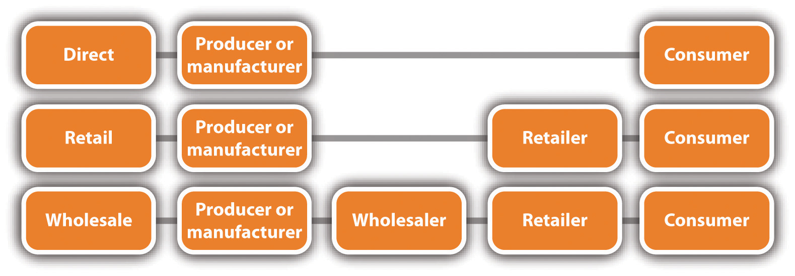

No matter how great a product or a service may be, customers cannot buy it unless it is made available to them onground or online or both. This is the role of the placeGetting a product or a service to the target customer at a reasonable cost and at the right time. P in the marketing mix—to get a product or a service to the target market at a reasonable cost and at the right time. Channels of distribution must be selected, and the physical distribution of goods must be managed.[citation redacted per publisher request].
A small business may choose the direct, retail, wholesale, service, or hybrid channels. In general, business-to-business (B2B) distribution channels parallel those of business-to-consumer (B2C) businesses.
Figure 7.6 Channels of Distribution
Many small businesses use the direct channelProducers sell products directly to the customer, with no intermediaries.. The direct channel involves selling directly to the final consumer with no intermediariesRetailers and wholesalers that operate between the producer and the consumer to facilitate some distribution processes. (retailers and wholesalers, also known as middlemen) in the process. The direct channel provides close contact with the customer and full control of all aspects related to the marketing of a company’s products.Dana-Nicoleta Lascu and Kenneth E. Clow, Essentials of Marketing (Mason, OH: Atomic Dog Publishing, 2007), 300. The Sugar Bakery & Sweet Shop in East Haven, Connecticut (winner of the Food Network’s 2010 “Cupcake Wars”), uses the direct channel, as does the local farmer when selling fruits and vegetables to the local population. Michael Dell started out by selling computers from his dorm room, and the founders of Nantucket Nectars began their business by selling their home-brewed fruit drinks to boaters in Nantucket Harbor.[citation redacted per publisher request]. Many B2B sellers also use the direct channel. Consolidated Industries, Inc., for example, sells helicopter parts directly to Sikorsky Aircraft and airline parts directly to Boeing. (See Chapter 5 "The Business Plan" for more information on Consolidated Industries, Inc.)
Sugar Bakery & Sweet Shop
(click to see video)The story of the winner of the Food Network’s 2010 “Cupcake Wars.”
iPhone App Beefs Up Sausage Sales
How an iPhone app has made business easier and better for a mobile sausage vendor.
money.cnn.com/video/technology/2010/09/16/t_turnaround_lets_be_frank_square.cnnmoney
Service businesses use the direct channel because there is no way to do otherwise. Services are performed and consumed at the same time, so there is no role for intermediaries. Tanning salons, home repair services, legal services, real estate services, and medical services all deliver directly to the consumer. Online services are also delivered directly to the final consumer, such as Carbonite and Legal Zoom.
The Internet has increased the opportunities for small businesses to use the direct channel as the only means of distribution or as an additional sales channel.[citation redacted per publisher request]. For example, Vermont Teddy Bear in Shelburne, Vermont, uses the Internet as its primary sales channel. Its only other channel is its onground factory tours that are offered year-round.
Vermont Teddy Bear Company
(click to see video)How the company started and how it has grown. It now makes 5,000 bears a day.
Many small businesses may choose to produce or manufacture products and distribute them to retailers for sale. This is considered an indirect channelWhen a retailer and/or a wholesaler is an intermediary between the producer or the manufacturer and the final consumer. because the retailer is an intermediary between the producer or manufacturer and the final consumer. If a small business that makes one-of-a-kind, handcrafted picture frames sells its frames to a picture-framing business that in turn sells the frames to its customers, this would be an example of using the retail channel. An online business that sells products made by several producers or manufacturers would also be using the retail channel—and would be called an e-tailer.
Future Vision of Retailing
(click to see video)Microsoft’s vision of future retailing.
YOUReality Retail Visualization Product
(click to see video)A new software product that enables customers to interact with products in their own space—really, really cool.
Although selling through retailers may expand the distribution coverage to a small business’s target market, the business must give up some control over pricing and promotion. In addition, the business should expect to get a wholesale price from the retailer that is significantly lower than what it would get if it sold directly to the final consumer.[citation redacted per publisher request].
WholesalersA (large or small) business that sells to retailers, contractors, or other types of businesses but not to the general public. are also intermediaries. A wholesaler is “a [large or small] business that sells to retailers, contractors, or other types of businesses (excluding farms), but not to the general public (or at least not in any significant amount).”“Monthly & Annual Wholesale Trade Definitions,” US Census Bureau, October 22, 2010, accessed December 1, 2011, www.census.gov/wholesale/definitions.html. A small business that chooses to use wholesalers is also using an indirect channel of distribution. Using a wholesaler makes sense when a business makes a product that it wants to sell in many stores that would not be easily or conveniently reachable through the direct channel or the retail channel. For example, Kathleen King’s small gourmet baked goods company (now known as Tate’s Bake Shop) earns much of its annual revenue from the wholesale distribution of its baked goods to approximately one hundred gourmet shops on Long Island, in New York City, and in other states.Dana-Nicoleta Lascu and Kenneth E. Clow, Essentials of Marketing (Mason, OH: Atomic Dog Publishing, 2007), 300. Her products can be viewed online at www.tatesbakeshop.com, and her story—including some valuable business lessons that she learned along the way—can be viewed in Note 7.107 "Video Clip 7.17".
Tate’s Bake Shop
(click to see video)The story of Kathleen King’s gourmet baked goods business—and some important business lessons learned.
Although any small business that uses wholesalers will see a reduction in profit, there are several advantages to wholesaling. For example, wholesalers are able to sell and promote to more customers at a reduced cost, they can deliver more quickly to buyers because wholesalers are closer to them, and wholesalers can inventory products, thereby reducing inventory costs and risks to their suppliers and customers.Philip Kotler and Kevin Keller, Marketing Management (Upper Saddle River, NJ: Pearson Prentice Hall, 2009), 458–59. Small businesses that produce only one or a few products commonly use the wholesale channel of distribution. Retail outlets may not be placing orders from the small business because it is not known. The wholesaler can put the product in front of them.Jeff Madura, Introduction to Business (St. Paul, MN: Paradigm Publishing, 2010), 445.
A small business may choose a multichannel distribution system (or hybrid channel)Two or more channels of distribution to reach one or more customer segments that offers customers multiple purchase and communication options.. This channel option uses two or more channels of distribution to reach one or more customer segments, offering customers multiple purchase and communication options.Philip Kotler and Kevin Keller, Marketing Management (Upper Saddle River, NJ: Pearson Prentice Hall, 2009), 429; Dana-Nicoleta Lascu and Kenneth E. Clow, Essentials of Marketing (Mason, OH: Atomic Dog Publishing, 2007), 303. The multichannel approach offers three important advantages:Philip Kotler and Kevin Keller, Marketing Management (Upper Saddle River, NJ: Pearson Prentice Hall, 2009), 429.
The hybrid approach works well for small businesses. Tate’s Bake Shop sells directly through its store in Southampton, New York, and online. It sells indirectly to gourmet retailers such as Sugar and Spice in Chappaqua, New York, through its wholesalers. Local restaurants also use the multichannel approach when customers can order online or by phone and then pick up the food at the restaurant.
Physical distribution (logistics)All the activities involved in the physical flow and storage of materials, semifinished goods, and finished goods to customers in a manner that is efficient and cost-effective. involves “all the activities involved in the physical flow and storage of materials, semifinished goods, and finished goods to customers in a manner that is efficient and cost effective.”Dana-Nicoleta Lascu and Kenneth E. Clow, Essentials of Marketing (Mason, OH: Atomic Dog Publishing, 2007), 306. Logistics can be performed by the producer or the manufacturer, intermediaries, or the customer. Deciding on the right logistics solution may be the differentiator that puts a company ahead of its competition.Jennifer Nichols, “Guide to Transportation and Logistics Companies for Small Business,” Business.com, accessed December 1, 2011, www.business.com/guides/logistics-management-for-small-business-175. Logistics are relevant to both online and onground companies.
The costs of logistics can account for as much as 10–35 percent of a company’s gross revenues, so any money that can be saved can lead to more affordable products for consumers and increased profitability. The costs will vary by several factors (e.g., industry sector, company location, and company size). Retailers that offer a wide assortment of products will spend more on logistics because transportation and storage costs will increase as the number of carried products increases.Dana-Nicoleta Lascu and Kenneth E. Clow, Essentials of Marketing (Mason, OH: Atomic Dog Publishing, 2007), 307.
Logistics
(click to see video)UPS Commercial: We Love Logistics. A fun insight into what logistics are all about.
Logistics involve the following four primary functions: transportation, warehousing, inventory control, and order processing.Dana-Nicoleta Lascu and Kenneth E. Clow, Essentials of Marketing (Mason, OH: Atomic Dog Publishing, 2007), 307.
Table 7.1 Characteristics of Different Modes of Transportation
| Mode | Percentage of Total Transportation | Cost | Speed | Product Examples* |
|---|---|---|---|---|
| Rail | 42 | Medium | Lower | Coal, stone, cement, oil, grain, lumber, and cars |
| Truck | 28 | Higher | Higher | Perishables, clothing, furniture, and appliances |
| Pipeline | 16 | Lower | Low | Oil, gas, chemicals, and coal as a semifluid |
| Water | 13 | High | Low | Coal, stone, cement, oil, grain, and cars |
| Air | 0.4 | High | High | Jewelry, perishables, electronics, wine, and spirits |
| *Small businesses are represented in each of the product examples given. | ||||
Source: Adapted from Dana-Nicoleta Lascu and Kenneth E. Clow, Essentials of Marketing (Mason, OH: Atomic Dog Publishing, 2007), 308.
There are several things that small businesses can do to increase the efficiency and the effectiveness of their logistics.Jennifer Nichols, “Guide to Transportation and Logistics Companies for Small Business,” Business.com, accessed December 1, 2011, www.business.com/guides/logistics-management-for-small-business-175. For example, a business can select a logistics company that is industry specific (e.g., wine or clothing) because that company will understand the shipping needs of the products or use small business logistics services from UPS or FedEx.
Logistics management also includes supply chain management. This is the focus of Chapter 11 "Supply Chain Management: You Better Get It Right".
For small businesses that sell online or hope to sell online, the company website “places” the product or the service in the hands of the customer. As a result, there are several decisions that must be made to facilitate the process so that customers can have a good online experienceAdapted from Sharad Singh, “Five Retail IT Trends to Watch in 2011,” RetailCustomerExperience.com, December 10, 2010, accessed December 1, 2011, www.retailcustomerexperience.com/article/178220/Five-retail-IT-trends-to-watch-in -2011; Jan Zimmerman, Web Marketing for Dummies, 2nd ed. (Hoboken, NJ: Wiley, 2009), 111–19. and be less inclined to abandon their shopping carts and leave the site without making a purchase.
Shopping cart abandonmentLeaving a website without buying any of the items in the shopping cart., or leaving a website without buying any of the items in the shopping cart, is something that affects almost every Internet retailer, including small businesses. Cart abandonment estimates range from 20 percent to 60 percent.“Digital Window Shopping: The Long Journey to ‘Buy’” McAfee, Inc., accessed December 1, 2011, www.mcafeesecure.com/us/resources/whitepapers/digital_window _shopping.jsp. An understanding of why shoppers are abandoning their carts should lead to some serious thinking during website design and operation. Table 7.2 "Why Online Shoppers Abandon Their Shopping Carts" gives examples of why shoppers abandon a purchase. Because shipping is the number one reason why shoppers abandon their shopping carts, think very carefully about what the shipping charges will be.Jan Zimmerman, Web Marketing for Dummies, 2nd ed. (Hoboken, NJ: Wiley, 2009), 118.
Table 7.2 Why Online Shoppers Abandon Their Shopping Carts
| High shipping charges | 46% |
| Wanted to comparison shop | 37% |
| Lack of money | 36% |
| Wanted to look for a coupon | 27% |
| Wanted to shop offline | 26% |
| Could not find preferred payment option | 24% |
| Item was unavailable at checkout | 23% |
| Could not find customer support | 22% |
| Concerned about security of credit card data | 21%“Digital Window Shopping: The Long Journey to ‘Buy’” McAfee, Inc., accessed December 1, 2011, www.mcafeesecure.com/us/resources/whitepapers/digital_window _shopping.jsp. |